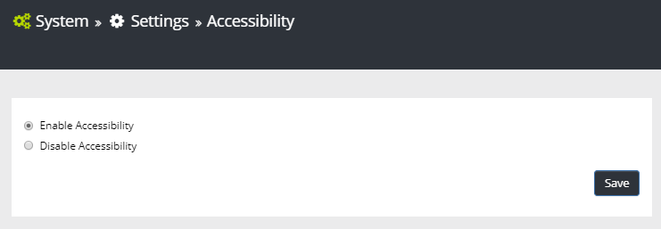
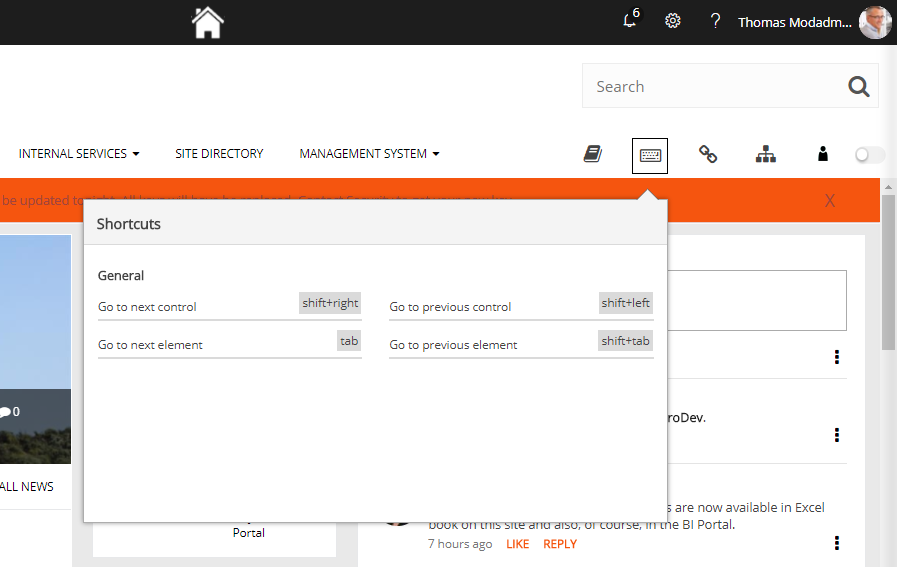

You can activate accessability for the tenant. When it's activate users can use the keyboard to navigate sites and make selections.
Just go click "Enable Accessability" and your done!

When Accessability is active, a keyboard icon is shown in the global navigation, which users can click to see which keyboard commands they can use:

What is not stated here is that you press Enter to select alternatives and open controls.